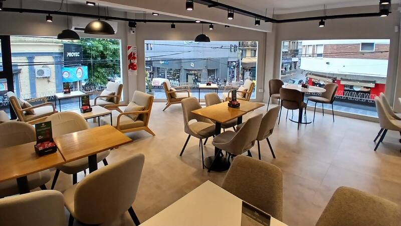
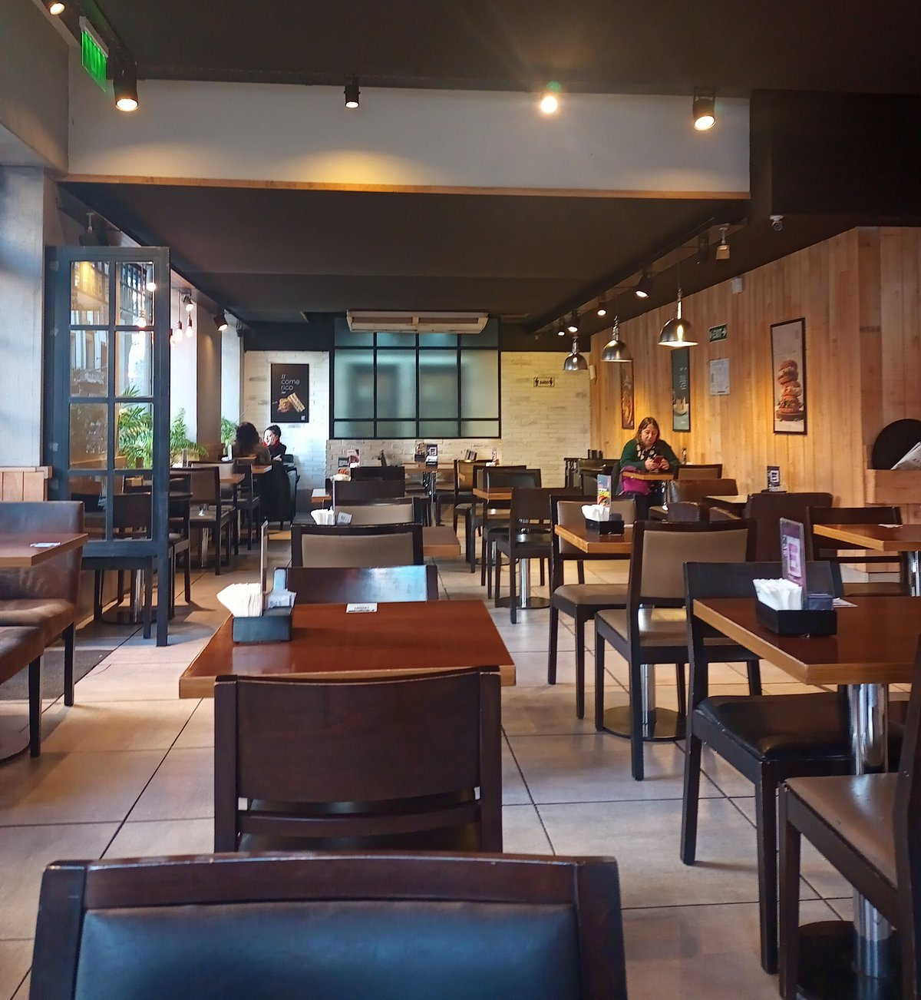

Encontrá tu casa de café más cercana
Diseñamos espacios cálidos para que disfrutes de tu pausa diaria, leas un libro o trabajes cómodo con la mejor conexión y aroma a café recién molido.

Diseñamos espacios cálidos para que disfrutes de tu pausa diaria, leas un libro o trabajes cómodo con la mejor conexión y aroma a café recién molido.



